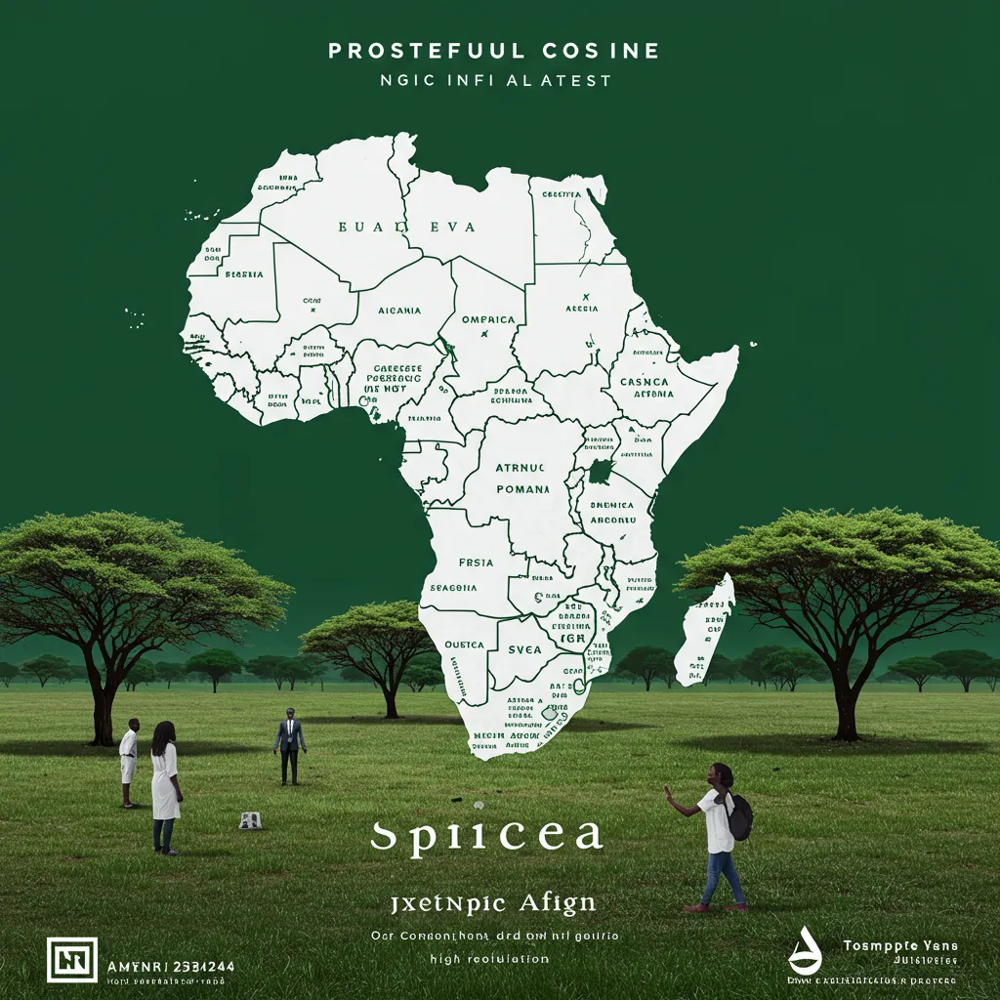
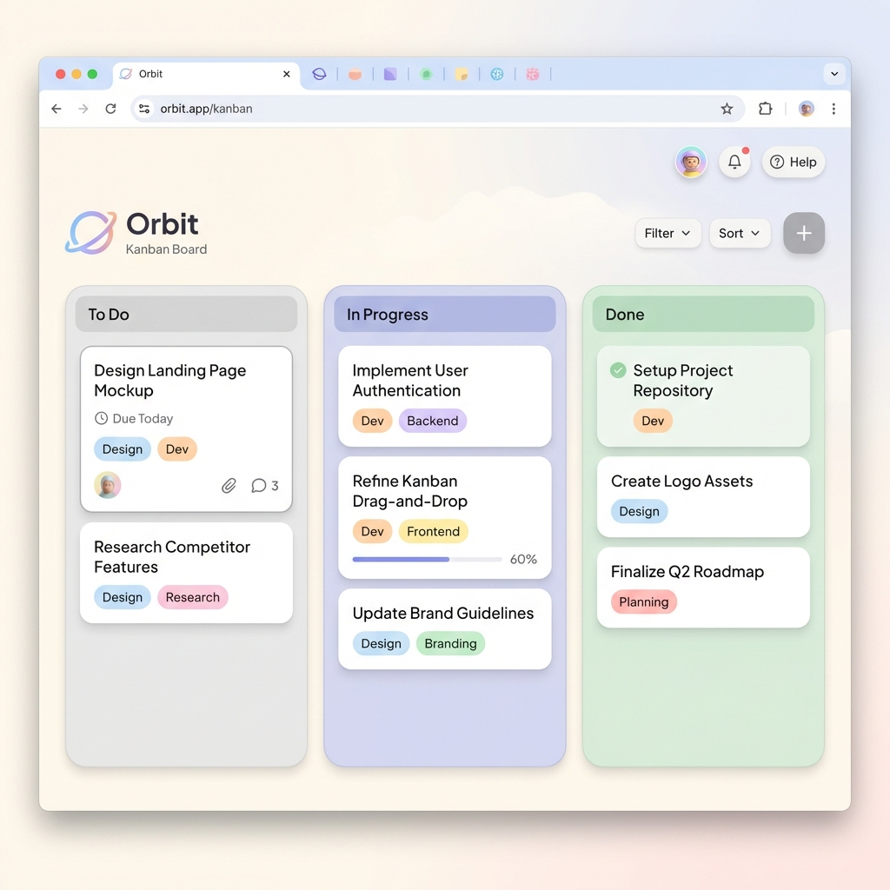
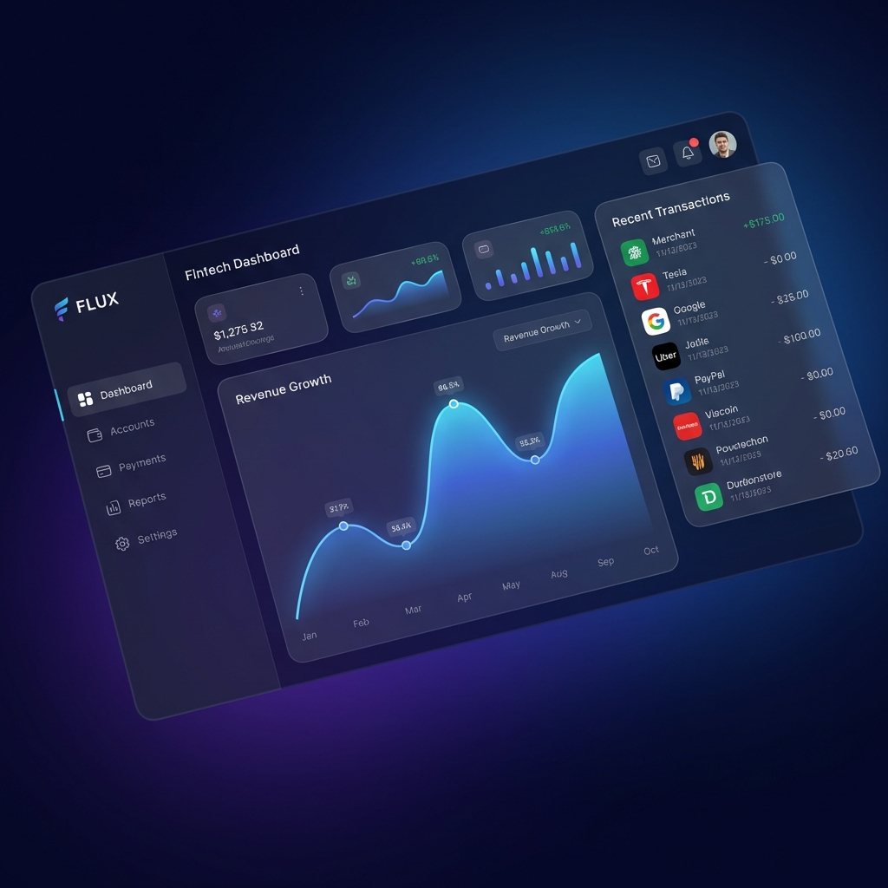

The Nook Hostel
A reimagined hostel booking platform with a warm, boho-rustic aesthetic. Features a split-hero layout and floating booking widgets.
View Live Project
Clean Africa NGO
A comprehensive multi-page website for an environmental NGO, featuring donation flows, project galleries, and blog.
View Live Project
Lars Petters Education
A comprehensive education platform landing page featuring course categories, instructor carousels, and student testimonials.
View Live ProjectDartar.ai Tech Landing
A modern B2B landing page for an AI logistics startup. Features clean corporate design, feature grids, and pricing tables.
View Live Project
Decora Interior Design
An elegant interior design and e-commerce platform. Features product listings, services page, and a polished dark-themed footer.
View Live ProjectCode Maze
An interactive mobile puzzle game built with Flutter. Features complex algorithms for maze generation and a sleek, native UI.
View Project Source
CoinPulse
A professional crypto dashboard featuring live Bitcoin prices, interactive Chart.js graphs, and market trending data.
View Live Project
Nexus News
A daily auto-updating news blog. Features category filtering, instant search, and a curated editorial layout powered by live data.
View Live Project
Zenith Architecture
A premium, minimalist portfolio for an architecture studio. Focuses on whitespace, elegant typography, and micro-interactions.
View Live Project
WeatherNova 3D
A futuristic 3D weather dashboard featuring real-time particle effects (rain, snow, clouds) and a glassmorphism UI.
View Live Project
Gourmet Recipe AI
A smart culinary assistant utilizing AI search logic and ingredient scaling to fetch 5000+ real-world recipes.
View Live Project
Atlas Explorer
An interactive world data explorer featuring real-time search, stats, and a country comparator tool.
View Live Project
Syntax Code Snaps
A developer tool to create aesthetic code screenshots with live customization and client-side image generation.
View Live Project
Velvet Real Estate
A premium real estate showcase featuring a 'Ken Burns' slider and elegant typography.
View Live Project
Orbit Task Manager
A calm, pastel-themed productivity tool featuring a drag-and-drop Kanban board.
View Live Project
Flux Fintech
A modern fintech dashboard featuring glassmorphism and interactive Chart.js analytics.
View Live Project